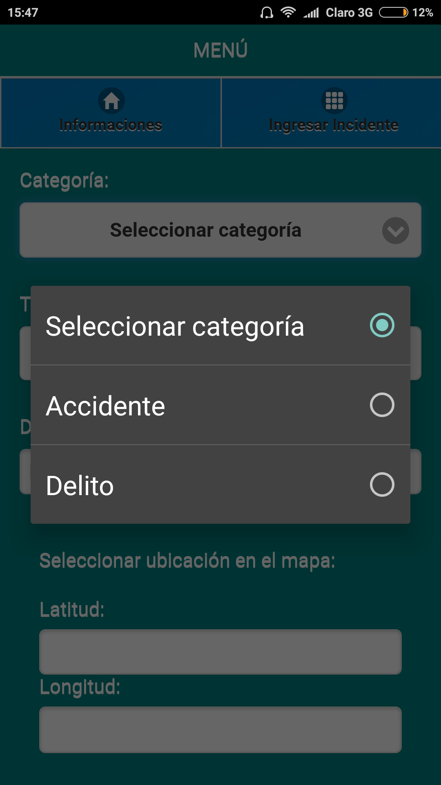
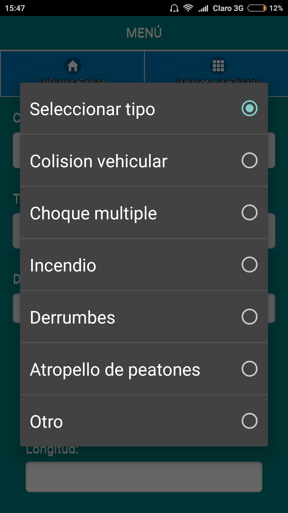

Como Usar la Aplicacion
El uso de la Aplicacion es Bastante Simple simplemente debemos presionar el boton Ingresar incidente

Al presionar el boton se nos desplegara la pagina en la cual podremos alerta de la siguiente Forma
Presionamos en primer lugar el boton selecionar Categoria con lo cual se desplegaran 2 principales categorias de Incidentes y seleccionaremos una


Lo suguiente es seleccionar el tipo de Incidente al presionar el boton seleccionar tipo que al igual que el caso anterior se desplegaran para selecciSonar el que nos corresponda


Mas abajo se presenta el espacio para anadir una descripcion opcional del incidente que deseamos anunciar

Y ahora lo Principal es nuestra ubicacion que se presenta de manera automatica en el mapa; en el caso de ser el preciso lugar del incidente y en el caso de no ser este moveremos el pincho a la posicion que corresponda el incidente a denunciar.

Por ultimo y muy importante para que nuestra denuncia se realice correctamente debemos presionar el boton Registrar Incidente con esto ya hemos realizado una alerta.